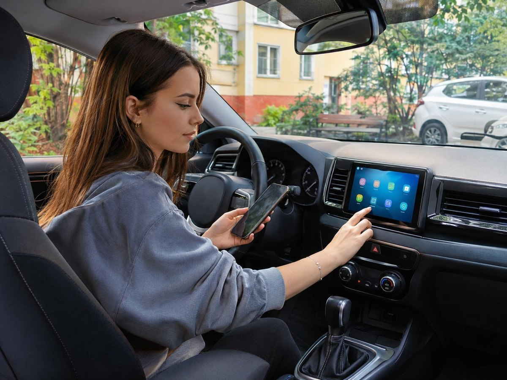
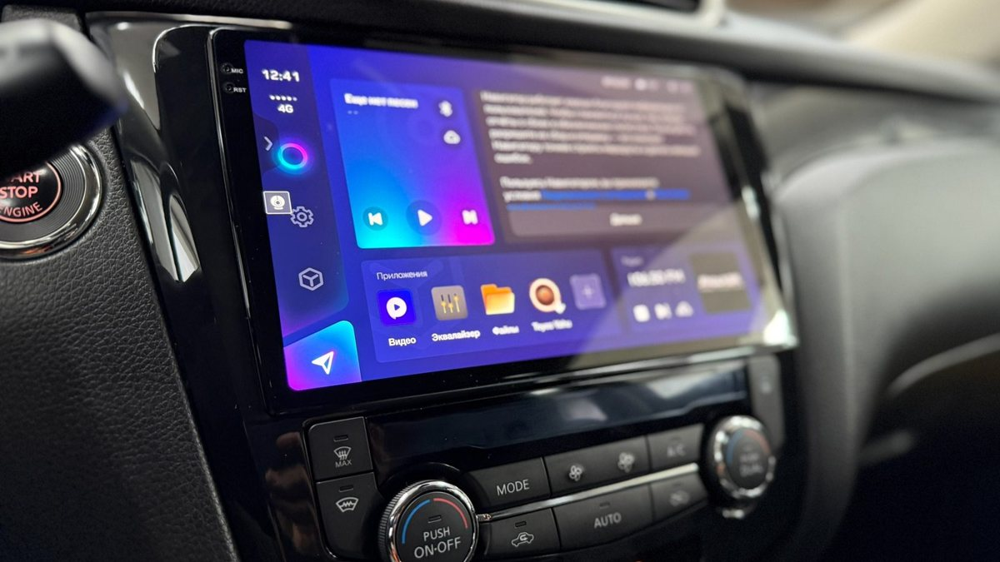
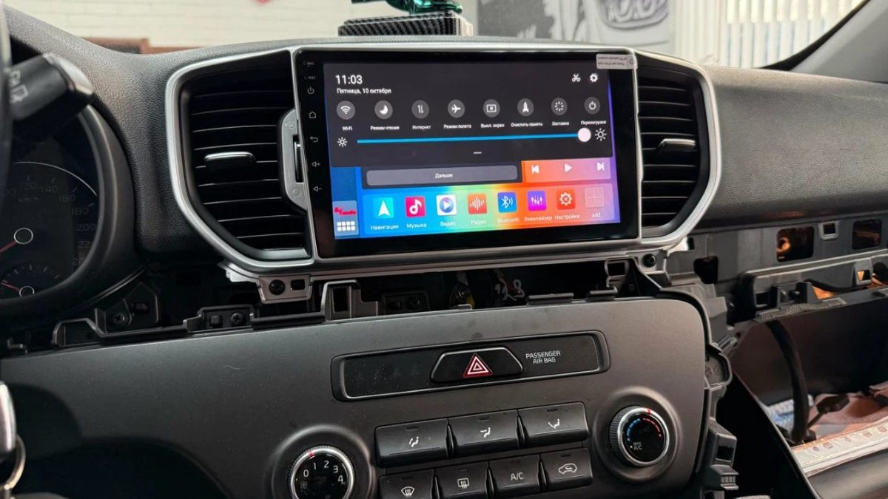

Магнитолу поставили, панель собрана, вы забрали машину и заехали во двор. Экран большой и красивый, но на нём десяток незнакомых значков, время показывает китайский часовой пояс, навигатора нет, а телефон к нему почему-то не цепляется. Самое время сесть с чашкой кофе и за полчаса сделать из нового экрана удобный инструмент.
Как настроить андроид магнитолу так, чтобы она не тормозила, не сажала аккумулятор и сразу показывала то, что нужно? Порядок простой: язык и время, интернет и аккаунт, приложения, кнопки руля, камера, звук. Ниже разбираем каждый шаг и объясняем, какие пункты лучше не трогать без мастера.

Начните с основы, иначе дальше многое будет работать криво.
- Язык и регион. Русский язык и часовой пояс Москвы: Ярославль живёт по московскому времени. Включите синхронизацию времени по сети или по GPS, иначе после отключения аккумулятора часы будут сбиваться.
- Интернет. Если в магнитоле есть слот для SIM, поставьте отдельную карту с интернетом: навигатор и музыка будут работать сразу после запуска. Если SIM нет, включите на телефоне точку доступа и подключите к ней магнитолу по Wi-Fi. Чтобы каждый раз не включать раздачу вручную, многие телефоны умеют включать её автоматически при подключении к машине.
- Аккаунт. Для магазина приложений нужен аккаунт. Можно завести отдельный, не связанный с основной почтой и фото: в машине на экране не нужны ваши личные данные.
Подключение к телефону идёт двумя путями, и они не заменяют друг друга.
Bluetooth нужен для звонков и музыки с телефона. Включите его на обоих устройствах, найдите магнитолу в списке на телефоне и подтвердите код. Разрешите доступ к контактам и журналу звонков, иначе звонить придётся по номеру.
Беспроводной или проводной CarPlay и Android Auto выводят интерфейс телефона на экран машины. Работают они через отдельное приложение магнитолы, и не все модели поддерживают беспроводной режим. Если пользуетесь им постоянно, проверьте, что телефон после подключения не садится слишком быстро: в беспроводном режиме он заметно греется.
Если магнитола не видит телефон, первым делом удалите сопряжение на обоих устройствах и создайте заново. Это решает большинство проблем.
Магнитола работает на том же Android, что и телефон, и тормозит по тем же причинам.
- Лишние приложения в автозапуске. Каждое приложение, стартующее вместе с системой, занимает оперативную память. Оставьте в автозапуске навигатор и музыку, остальное запускайте по необходимости.
- Несколько навигаторов одновременно. Два навигатора в фоне отнимают ресурсы, а пользуетесь вы одним. Оставьте один основной.
- Забитая встроенная память. Офлайн-карты и скачанная музыка занимают много места. Когда свободного почти нет, система начинает работать медленнее.
Ещё одна настройка, о которой часто не знают, – режим сна. Многие магнитолы умеют не выключаться полностью, а засыпать, чтобы включаться за пару секунд. Удобно, но если машина стоит неделю у дачи или зимой на морозе, такой режим может заметно разрядить аккумулятор. Проверьте, через какое время после выключения зажигания магнитола уходит в полное выключение, и при редких поездках сделайте это время коротким.
Набор, который закрывает почти все задачи в дороге.
- Навигатор с офлайн-картами. Скачайте карты Ярославской области и соседних, если ездите по М8 в сторону Москвы или Вологды: между городами связь бывает слабой.
- Музыка. Сервис, которым вы пользуетесь в телефоне, плюс простой проигрыватель для флешки.
- Приложение регистратора или камер, если они подключены к магнитоле.
- Голосовой помощник, если хотите управлять навигатором голосом без рук.
Ставьте приложения из магазина приложений, а не файлами с непроверенных сайтов. Неизвестная программа на устройстве, которое знает ваше местоположение и подключено к машине, – лишний риск.

Если навигатор долго ищет местоположение или показывает вас на соседней улице, дело чаще в антенне, а не в программе. Магнитола берёт координаты через выносную GPS-антенну, и если её спрятали под металлической частью панели, сигнал слабый. Антенну выводят туда, где над ней только пластик и стекло.
После долгой стоянки или после отключения аккумулятора первое определение места может занимать несколько минут: приёмник заново ищет спутники. Это нормально. Если же навигатор теряет позицию каждый день, проверьте, разрешено ли приложению навигатора использовать GPS и не ограничено ли ему фоновое энергопотребление.
Кнопки на руле работают одним из двух способов. В одних машинах кнопки резистивные: каждая кнопка меняет сопротивление в цепи, и магнитола учится их различать. Тогда в настройках есть пункт «Кнопки руля» или «Обучение кнопок»: нажимаете функцию на экране, затем кнопку на руле, и так по списку.
В других машинах кнопки передают команды по цифровой шине через CAN-декодер. Тогда в настройках выбирают тип декодера и модель машины. Если выбрать неправильно, часть кнопок не работает или делает не то. Обычно это настраивает установщик, но после сброса магнитолы к заводским параметрам выбор слетает, и его приходится сделать заново.
Камера заднего вида включается сама, когда магнитола получает сигнал о задней передаче. Этот сигнал приходит либо по отдельному проводу от фонаря заднего хода, либо через CAN-декодер. Если камера не включается, первым делом проверяют именно его.
Что настроить в меню камеры.
1. Формат сигнала. Камеры бывают аналоговые обычного разрешения и AHD с высоким разрешением. Формат в настройках должен совпадать с камерой, иначе вместо картинки будет чёрный экран или полосы.
2. Зеркальность. Картинка должна быть отражённой, как в зеркале заднего вида. Если объекты справа видны слева, переключите зеркалирование.
3. Разметка. Включите линии и выставьте их по реальной ширине машины. Проверьте на парковке: поставьте машину ровно у разметки и сравните с линиями на экране.
4. Громкость при заднем ходе. Есть настройка, приглушающая музыку при включении камеры, чтобы были слышны парктроники.
Зимой объектив камеры быстро забрызгивается солёной кашей. Если картинка мутная, сначала протрите камеру, а уже потом лезьте в настройки.
В инженерное меню магнитолы вход защищён паролем. Он разный у разных производителей и иногда даже у разных прошивок одного производителя. Пароль спрашивают у установщика или продавца, и это правильно: в инженерном меню выбирают тип машины, декодер, параметры экрана и усилителя. Неправильное значение может отключить звук, кнопки или камеру.
Совет простой: в инженерное меню заходите, только когда точно знаете, что меняете, и перед этим сфотографируйте текущие значения. А прошивку обновляйте только официальной версией для своей модели магнитолы: чужая прошивка может превратить экран в неработающий кирпич.
Настройка андроид магнитолы по звуку – то, что делают реже всего, а разницу слышно сразу.
- Баланс и фейдер. Сместите звук ближе к водительскому месту, если обычно ездите один.
- Эквалайзер. Начните с ровной кривой и меняйте по одной полосе понемногу. Сильный подъём низов на штатных динамиках даёт хрип на громкости.
- Тонкомпенсация. Полезна на тихой громкости, на большой её лучше выключать.
- Задержки по каналам. Если они есть, с ними звуковая сцена встаёт перед водителем, а не в левой двери. Тут удобнее довериться мастеру.
Магнитола сбрасывает настройки после выключения. Почему? Чаще всего перепутаны постоянный плюс и плюс от зажигания или постоянное питание пропадает. Это проверяют по проводке, настройками это не лечится.
Где взять пароль для заводских настроек? У установщика или продавца. Пароли разные у разных производителей, поэтому универсального нет. Без пароля магнитолой можно пользоваться полноценно, он нужен только для инженерного меню.
Почему не работает камера на задней передаче? Проверьте, что выбран правильный формат сигнала камеры и что магнитола получает сигнал задней передачи. Если формат верный, а экран не переключается, причина в проводке или декодере.
Можно ли ставить любые приложения? Можно, но всё, что запускается в фоне, отнимает память. Ставьте нужное и из магазина приложений.
Нужно ли отключать магнитолу на время долгой стоянки? Достаточно настроить быстрое полное выключение после зажигания. Если машина стоит больше недели, особенно в мороз, лучше это проверить.
Студия «Звук на Волге», Ярославль, проспект Октября, 82б. Пн–пт 8:30–20:00, сб–вс 10:00–19:00. Подбираем Android-магнитолы под машину, устанавливаем и настраиваем: навигатор, камеру заднего вида, регистратор, кнопки руля и звук. Если после установки захочется что-то поменять в настройках, приезжайте, поможем.
Подробнее и запись: Android-магнитолы с установкой и настройкой. Телефон +7 902 220-75-55, сообщения в ВК: vk.me/avtostil_yaroslavl.
Раньше нас знали как «Автостиль». Мы обновились и, раз занимаемся звуком в Ярославле, назвались «Звук на Волге». Адрес тот же.